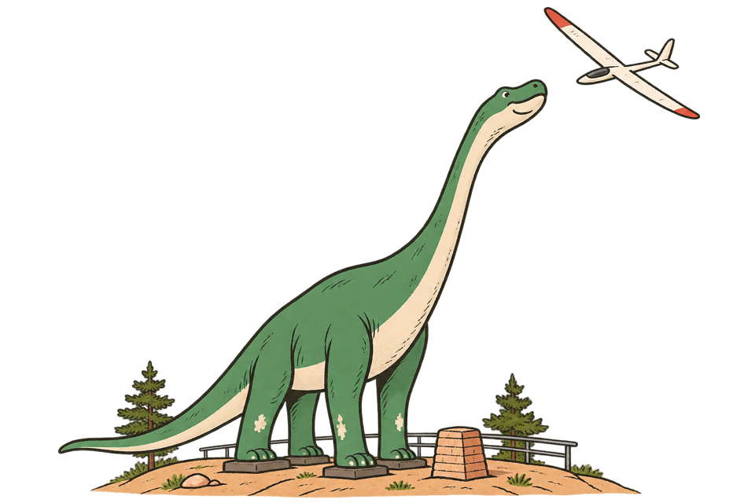

{{ site.data.glide.tagline }}
{{ site.data.glide.name }} shows where your glider can still land from a launch: round the hills in the way, with the wind, and within sight.
Pick the nearest; every number can be fine-tuned later under Aircraft.
How high does it start?
The strip under the map is a cross-section: drag its dial to turn it. Select Inspect destination, then tap a spot for the route with the highest predicted arrival height, then press Fly it to follow the glide in 3D. Set the wind under Wind: the reach leans downwind.